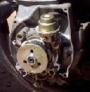
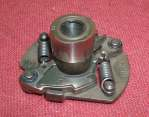

When combustion occurs it does not take place instantly. It requires a period of time. Depending on the RPM the power stroke can be .05 of a second at 1200 rpm to .0057 of a second at 10,500 rpm. Now even though the time for combustion at 1200 rpm is not much, it is still over 8 times what is available at 10,000 rpm.
The reason that this small amount of time is important is because the combustion process is not as much an explosion as it is a controlled burning. The time available for this controlled burning decreases as the rpm goes up. To compensate for this, the point where the spark occurs, to start the combustion process, must occur earlier Before Top-Dead-Center (BTDC) of the compression stroke. To accomplish this weights and springs are attached to the points cam. As the cam spins on its shaft, centrifugal force causes the weights to move and turn this cam on its shaft, advancing the timing of the spark, thus giving the combustion process more time to occur as the rpm goes up. Full advance is usually reached on most engines by around 3000 rpm.
 Most motorcycle engines with points have only a Centrifugal Advance. A few have a Vacuum Advance. Newer engines with electronic ignitions usually have an electronic advance. Some engines have fixed timing with no automatic advance at all. The advance is fixed at so many degrees Before Top-Dead-Center (BTDC) and does not vary. The lower the compression ratio an engine has, the more spark advance it needs. This is because rapid combustion is aided by a high compression pressure. Because the combustion process takes place quicker with a high compression ratio less time is needed, therefore less spark advance. Conversely lower compression pressure slows the combustion process, necessitating more spark advance. Now why all this about compression pressure and spark advance? Simply this, as an engine wears out it starts leaking compression past rings and valves. This lowers the compression pressure (ratio).
What does this mean? You got it, we need to advance the ignition timing as an engine ages.
OK...Great...Now What? Well, if the engine is worn, lots of miles or hard use, we need to advance the point at which the spark occurs. This works best on large 4-stroke engines although it can be done on small ones too, but it is harder to do. I don't do this to 2-strokes. They are just a different breed of engine. I don't do this with flywheel magnetos ( Honda 50's, 70's etc. ) either, because it is a lot of work with that type of ignition system. On many of the newer motorcycles you just can't do it without major modification, but on almost all points ignition machines and a lot of electronic ignition ones, you can. I don't do this with engines that have real good compression because they don't need it. On these engines the stock timing marks will probably work best. This is for old, worn, tired, engines. However, I have heard of this method being used with heavily modified engines, to get a starting point in the tuning process.
Now when we increase the spark advance (the point when the ignition spark occurs, at the sparkplug, before-top-dead-center of the compression stroke [BTDC] ) we get more power BUT we also get more heat. There is a point after which we get lots more heat and very little extra power. We want to STOP before we get to this point.
The drill is this... With the engine at normal operating temperature and idling, advance the timing slowly. You will hear the engine speed up. Move the timing back and forth, advancing and retarding it till you get the highest engine idling speed. Then back it off (retard it) just a bit. The engine speed slows down just a little. You are still idling, don't touch the throttle.
Go for a short ride and make sure the engine does not "ping" under load. Then check the color of the spark plug(s) to make sure it's not running too hot and you are done!